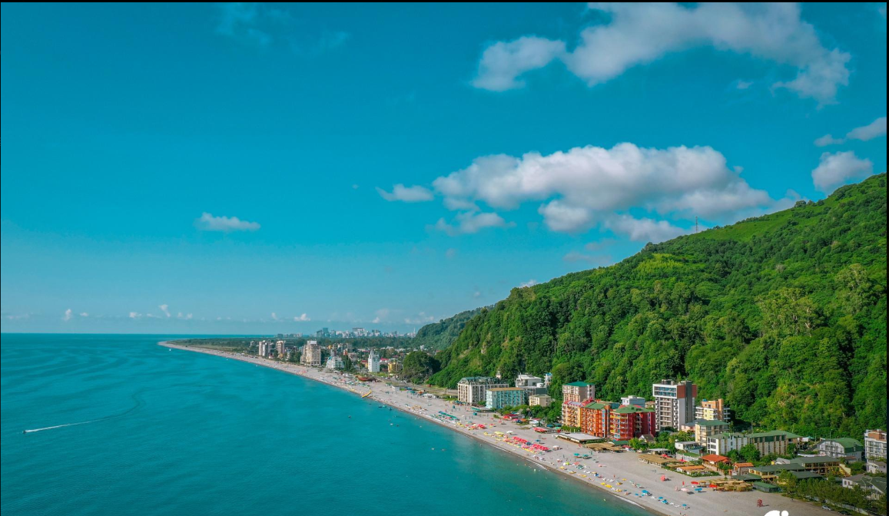

Adjara is historical-geographical site of Georgia, which is located in the gorge of Adjaratskali. The territory of the Adjara region has great history. It was populated from ancient time. Except cultural monuments from different period, there is a wonderful nature in here, like sunny beaches, greenery and very impressive mountainous Adjara. You can meet the local lifestyle and culture in the mountainous villages, which are far from the bustle of modern civilization. Adjara is an amazing site for noisy entertainment and chocolate sunburn lovers as well as for the adventurers of harmony in a peaceful nature.
Having an interesting culture and traditions in Adjara, one can meet sharply different outfit, cuisine and folklore here. This region is characterized by diversity. The clothes of Adjarian man were short and close-fitting. Chokha is slightly below of the waist and was embedded in a woolly Dzigva (Trousers). Inside of Chokha Georgian man wore Zubun (long sleeve waistcoat). Adjarian man was wearing Kalamani( shoes) outside the local knitwear and velvety socks. They were having Kabbalah( hat) on the head. Some of them were wearing Chokha and black satin Zubuns. The main attribute of Adjarian outfit was the weapons - a rifle, a waistband around the waist, a silversmith, a dagger and Matara (flask). The women wore a kind of coat with a cotton or without it, according to the season. Below the waist, they wore a dress, under the dress - a shirt and trousers made of scarlet. On top of them was headwear, a Lechak from above, one of the button was down to the waist, with a thin veil on her face. Above all, they had a white veil. Adjara has a very diverse folklore. Cheerful poetry, martial dance “Khorumi” and energetic, lovely dance “Gandagana” that expresses the identity and character of this region in the best way. There are many public celebrations in Adjara like: Shuamtoba, Maretoba, Machakhloba, Selimoba, Tbeloba etc. The festivals include hunting, games, dancing, singing, sports competitions, and sometimes showing off the local handmade things. One can also have the opportunity to taste traditional Adjarian dishes on the festivals.  Adjarian cuisine is rich and tasteful. Usually they use milk products like butter, cottage cheese, cheese etc. A hardworking and tireless peasant needs nutritious food. The best local dishes are: Adjarian Khachapuri, Borano, IaKhni, Fkhallobio, Achma Sinori da Kuruti. Adjarian Baqlava is especially delicious among sweets. Viticulture is the oldest tradition in Adjara. The amount of local vine varieties was 80. The most widespread types of grapes are Tsolikauri and Chkhaveri. Today the most popular is Satsuri. Tobacco and beekeeping are also widespread in the region.
Adjara is located in the southwestern corner of the country, in the gorge of AdjaraTskali, on the coast of the Black Sea. It has borders with region of Guria to the north, Samtskhe-Javakheti to the east and Turkey to the south. The administrative center of Adjara is Batumi. The municipalities of Batumi, Khulo, Qeda, Qobuleti, Shuakhevi and Khelvachauri are included in the autonomous republic of Adjara. The Mountain Kanli is the highest top of Adjara, which is located in the mountain range of Arsiani. The main river of the region is Adjara’s water (Adjaristskali). The tributaries of Adjaratskali are: Kavre, Khokhnistskali, Agaristskali, Chvanistskali, Chirukhistskali and others. There are also other rivers in Adjara like: Kintrishi, Chakvistskali, Korolistskali, which flow directly into the Black Sea. The Kobuleti-Chakvi Ridge, which divides this region into mountainous and seaside zones, plays a vital role in the formation of the Adjara microclimate. Because of this, Adjara is characterized by humid subtropical climate, warm winter and hot summer. There is much snow and less humid climate in mountainous Adjara. The average summer temperature in coastal zones is 22-24 ° C, in the mountains - 17-21 ° C. In winter, lowland areas the temperature is 4-6 ℃, highland areas 3-2 ℃. This area is not rich by lakes, but you can still find some lakes here.
There are many interesting monuments in Adjara, which has the ancient culture. One can see here monuments from Stone, Bronze-Iron and Antic Age (The fortress of Gonio and the standing stone of Tkhilvani). Also monasteries, fortresses and bridges from the middle ages, that witnessed many interesting historical events. The nature of Adjara is breathtaking and diverse. You will be impressed by the waves of the black sea, beautiful gorges, waterfalls and alpine meadows. There are 4 protected areas in Adjara and each one is characterized by individual and endemic varieties. Adjara is also rich with seaside and mountainous resorts.
translate to englesh